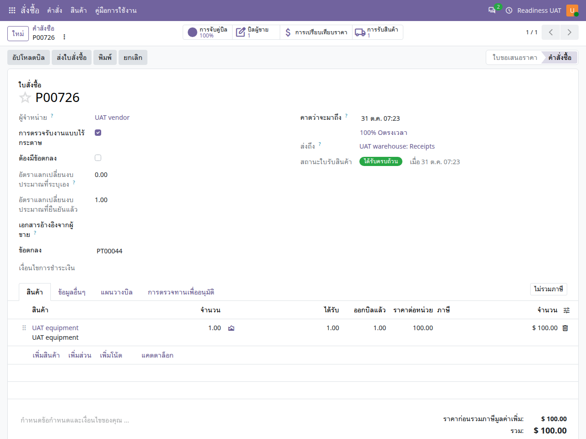

คู่มือการใช้งาน
สั่งซื้อ
จัดทำใบเสนอราคาและใบสั่งซื้อ เชื่อมใบขอซื้อ ตรวจอนุมัติ และติดตามการรับของหรือบริการ
ไม่พบข้อความ ลองใช้คำอื่นหรือล้างคำค้นหา
เริ่มใช้งานและอ่านหน้าจอ
เปิดแอปจากเมนูหลัก แล้วเลือก คู่มือการใช้งาน คู่มือเปิดในแท็บใหม่เพื่อให้ดูพร้อมหน้าทำงานได้ เลือกแอปอื่นจากรายการด้านซ้าย หรือค้นหาคำในคู่มือนี้ และใช้ปุ่มพิมพ์ / บันทึก PDF เมื่อต้องการสำเนา
- ตรวจบริษัทที่มุมขวาบนและหน่วยงานในเอกสารก่อนสร้างหรืออนุมัติ เมนูและปุ่มขึ้นกับสิทธิ์ของบัญชี
- หลังแก้ข้อมูล ให้ใช้ปุ่มบันทึก / ไอคอนบันทึกตามที่แบบฟอร์มแสดง แล้วตรวจสถานะและเลขเอกสารก่อนออกจากหน้า
- ภาพประกอบเป็นข้อมูลจำลอง ชื่อรายการ ภาษา หรือเลขเอกสารอาจต่างจากบัญชีของคุณ ตัวเลขในภาพไม่ใช่ค่าที่ต้องกรอก
- ข้อความผิดเงื่อนไขให้จดเลขเอกสารและข้อความที่แสดง ส่งให้ผู้รับผิดชอบงานตรวจ อย่าส่งรหัสผ่านหรือข้อมูลเข้าสู่ระบบ
- ถ้าคู่มือเปิดแล้วภาพหรือภาษาเก่าค้าง ให้บันทึกงานในหน้าระบบก่อน แล้วรีเฟรชแท็บคู่มือ
เลือกเอกสารให้ตรงงาน
- ใบขอซื้ออนุมัติ
- ใบเสนอราคา / RFQ
- ตรวจลำดับและข้อตกลง
- ยืนยันใบสั่งซื้อ
- รับของ / ตรวจรับ / ใบเรียกเก็บเงิน
ใช้เอกสารคำขอและข้อตกลงต้นทางที่อนุมัติแล้วตามนโยบายจัดซื้อ การยืนยันใบสั่งซื้อเป็นการดำเนินงานจริงและมีผลกับภาระผูกพันงบประมาณ
สร้างและตรวจใบเสนอราคา
สั่งซื้อ → คำสั่งซื้อ → คำขอใบเสนอราคา
- เลือกผู้ขาย บริษัท และวันที่ ตรวจเลขอ้างอิงผู้ขายและเงื่อนไขชำระเงิน
- เพิ่มสินค้า/บริการ จำนวน ราคา ภาษี และวันกำหนดรับ
- เชื่อมบรรทัดคำขอซื้อต้นทางและมิติงบประมาณที่เกี่ยวข้อง ตรวจให้ตรงกับผู้ขาย บริษัท และหน่วยงาน
- บันทึกและตรวจยอดรวมก่อนส่งให้ผู้ขายหรือส่งตรวจตามลำดับ

สกุลเงินอยู่ตรงไหน
ช่อง สกุลเงิน อยู่ใกล้ผู้ขายและเลขอ้างอิงผู้ขาย และปรับได้ในช่วงก่อนยืนยันตามสิทธิ์ หากบัญชีไม่เปิดใช้หลายสกุลเงิน ช่องนี้จะถูกซ่อน ผู้ดูแลต้องเปิดใช้สกุลเงินและสิทธิ์ให้ก่อน
ตรวจอนุมัติและยืนยัน
- ถ้าแบบฟอร์มใช้ลำดับตรวจทาน ให้ขอตรวจตามลำดับและเปิดแท็บการตรวจอนุมัติ
- ผู้ตรวจที่ถึงลำดับใช้อนุมัติหรือปฏิเสธตามข้อเท็จจริง หากแก้ข้อมูลสำคัญอาจต้องตรวจใหม่
- ถ้าประเภทจัดซื้อบังคับข้อตกลง ให้สร้างและเปิดใช้งานข้อตกลงที่ลงนามและตรงเงื่อนไขก่อนยืนยัน
- กดยืนยันใบสั่งซื้อเมื่อข้อมูลครบ แล้วตรวจสถานะ เลขเอกสาร และเอกสารเชื่อมโยง
รับของ ตรวจรับ และเรียกเก็บเงิน
- งานสินค้าให้เจ้าหน้าที่คลังเปิดการรับสินค้าที่เชื่อมใบสั่งซื้อและบันทึกจำนวนจริง
- งานที่ต้องตรวจรับให้เปิดหรือสร้างเอกสารตรวจรับ แล้วดำเนินการตามคณะกรรมการ/ผู้ตรวจที่กำหนด
- การสร้างใบเรียกเก็บเงินต้องตรงกับปริมาณและเงื่อนไขต้นทาง หากใช้แผนงวดให้เปิดงวดที่เกี่ยวข้อง
- ตรวจยอดที่รับแล้ว เรียกเก็บแล้ว และส่วนค้าง หลีกเลี่ยงการสร้างใบเรียกเก็บเงินจากหลายเส้นทางซ้ำกัน
แผนงวดและการแก้เอกสาร
ในแท็บแผนใบแจ้งหนี้ กำหนดจำนวนงวด วันที่เริ่ม และช่วงเวลา แล้วใช้ปุ่มสร้างงวด ตรวจยอดและเปอร์เซ็นต์ก่อนสร้างใบเรียกเก็บเงินแต่ละงวด การแก้หรือยกเลิกใบสั่งซื้อที่มีการรับของหรือลงบัญชีแล้วต้องตรวจเอกสารปลายทางและใช้กระบวนการคืน/ลดหนี้ที่เหมาะสม
เมื่อยืนยันไม่ได้
| อาการ | สิ่งที่ควรตรวจ |
|---|---|
| ยังไม่มีข้อตกลงที่ใช้ได้ | ตรวจวันที่ลงนาม ช่วงวันที่ใช้งาน สถานะ คู่ค้า และใบสั่งซื้อที่ผูกกับข้อตกลง |
| ลำดับตรวจยังไม่ครบ | ดูแท็บการตรวจอนุมัติและผู้ตรวจลำดับปัจจุบัน |
| งบประมาณไม่พอ | ตรวจยอดจากคำขอ ราคาและจำนวนในใบสั่งซื้อ และอัตราแปลงเงิน |
| ไม่เห็นช่องสกุลเงิน | ให้ผู้ดูแลตรวจสิทธิ์หลายสกุลเงินและสถานะสกุลเงินที่ต้องใช้ |
FAQ: การตั้งค่าและเปลี่ยนสกุลเงิน
ใช้ได้กับทุกแอป โดยแยกสกุลเงินบริษัทออกจากสกุลเงินเอกสาร รหัส THB (฿) คือเงินบาท และ USD ($) คือดอลลาร์สหรัฐ การเปลี่ยนภาษาเป็นไทยไม่เปลี่ยนสกุลเงินจริง
1. ต้องการใช้เงินบาททั้งระบบ ต้องตั้งที่ไหน?
ให้ผู้ดูแลที่มีสิทธิ์จัดการบริษัท เลือก การตั้งค่า → บริษัท → เปิดบริษัทที่ต้องการ → ข้อมูลทั่วไป → สกุลเงิน แล้วเลือก THB และบันทึก ควรกำหนดก่อนเริ่มตั้งค่าบัญชีและสร้างเอกสารธุรกิจ ตรวจประเทศและผังบัญชีให้ตรงกับการใช้งานด้วย ค่าเริ่มต้น THB ของชุด ERP นี้ใช้กับบริษัทใหม่ โดยบริษัทสาขาอาจรับสกุลเงินจากบริษัทแม่ และการระบุสกุลเงินอื่นอย่างชัดเจนยังมีผล
สกุลเงินบริษัทเป็นค่าหลักของงบประมาณ บัญชี และรายงานหลายประเภท เอกสารซื้อหรือรายจ่ายยังใช้สกุลเงินต่างประเทศได้ตามสิทธิ์และการตั้งค่า จึงไม่ใช่การบังคับให้เอกสารทุกฉบับแสดง ฿
2. ทำไม admin เปลี่ยนสกุลเงินบริษัทไม่ได้?
ถ้ามีข้อความว่า คุณไม่สามารถเปลี่ยนสกุลเงินของบริษัทได้ เนื่องจากมีรายการสมุดรายวันบางรายการอยู่ แสดงว่าระบบพบประวัติรายการบัญชีแล้ว ข้อจำกัดนี้ใช้กับ admin ด้วย และอาจรวมบริษัทแม่/สาขาที่เกี่ยวข้อง การมีเพียงชื่อสมุดรายวันกับการมีรายการบัญชีเป็นคนละเรื่อง อย่าลบรายการบัญชีหรือฝืนแก้ฐานข้อมูลเพื่อปลดล็อก
สำหรับการทดลอง ให้ผู้ดูแลสร้างบริษัททดลองใหม่ ตั้งประเทศและสกุลเงิน THB ก่อนเริ่มงาน เตรียมผังบัญชีและสมุดรายวัน แล้วกำหนดสิทธิ์ผู้ใช้ หน่วยงาน คลัง และข้อมูลพื้นฐานที่แอปนั้นต้องใช้ จากนั้นเลือกบริษัทใหม่ที่มุมขวาบน บริษัทและเอกสาร USD เดิมยังคงเดิม การเพิ่มบริษัทไม่ใช่การแปลงยอดหรือย้ายประวัติเดิม สำหรับการเปลี่ยนระบบใช้งานจริงต้องวางแผนย้ายยอดกับผู้รับผิดชอบบัญชี
3. แอปนี้เลือกหรือเปลี่ยนสกุลเงินตรงไหน?
ไปที่สั่งซื้อ → คำขอใบเสนอราคาหรือใบสั่งซื้อ เปิดเอกสารที่ยังแก้ไขได้ เลือกผู้ขาย แล้วเลือกช่องสกุลเงินเป็น THB หรือ USD ก่อนยืนยัน ตรวจราคาต่อหน่วย ภาษี ยอดรวม และอัตราแลกเปลี่ยนอีกครั้ง หากยืนยันแล้วหรือมีการรับของ/ออกใบเรียกเก็บเงิน ให้ผู้รับผิดชอบตรวจขั้นตอนยกเลิกหรือแก้ไขที่ระบบอนุญาตก่อน ไม่เปลี่ยนเอกสารที่มีประวัติปลายทางโดยตรง
4. ไม่พบ THB หรือไม่เห็นช่องสกุลเงิน ต้องทำอย่างไร?
ให้ผู้จัดการบัญชีตรวจที่ ออกใบแจ้งหนี้/การบัญชี → การกำหนดค่า → บัญชี → สกุลเงิน ว่า THB และสกุลเงินที่ต้องใช้เปิดใช้งานอยู่ การเปิดใช้หลายสกุลเงินและสิทธิ์ผู้ใช้อาจเป็นเงื่อนไขให้ช่องสกุลเงินปรากฏ ชื่อเมนูอาจต่างตามสิทธิ์และภาษา
ก่อนใช้เงินต่างประเทศ ให้ผู้รับผิดชอบบัญชีกำหนดอัตราแลกเปลี่ยนของบริษัทและวันที่ที่เกี่ยวข้อง ตรวจทิศทางอัตราตามที่หน้าจอแสดง ไม่ถือว่าระบบดึงอัตราให้อัตโนมัติเสมอ หากเอกสารมีอัตราที่ระบบบันทึกไว้แล้ว อัตราใหม่ไม่จำเป็นต้องแก้ยอดประวัติย้อนหลัง
5. บัญชีทดลองไม่เห็นการตั้งค่า ต้องใช้ admin เท่านั้นหรือไม่?
ขึ้นกับสิทธิ์ที่ได้รับ ไม่ใช่ชื่อบัญชี บัญชีทดลองถูกซ่อนแอปและการตั้งค่าระบบโดยตั้งใจ ให้ผู้ดูแลที่มีสิทธิ์บริษัทหรือผู้จัดการบัญชีตั้งค่าที่เกี่ยวข้องให้ ผู้ใช้งานทั่วไปเลือกสกุลเงินได้เฉพาะเอกสารที่ตนมีสิทธิ์และยังแก้ไขได้ ไม่ต้องเพิ่มสิทธิ์ผู้ดูแลระบบเพียงเพื่อเลือกสกุลเงินเอกสาร
6. เลือกบริษัท THB แล้ว ทำไมยังเห็น $?
ตรวจบริษัทที่มุมขวาบนก่อน โดยเลือกบริษัทเดียวเมื่อกำลังตรวจยอด จากนั้นตรวจบริษัทและสกุลเงินในเอกสารจริง เอกสาร USD เดิม ใบสั่งซื้อจากผู้ขายต่างประเทศ หรือข้อตกลงที่เชื่อมเอกสาร USD ยังแสดง $ ได้ตามข้อมูลจริง บันทึกงานก่อนโหลดหน้ารายงานหรือแดชบอร์ดใหม่ การเปลี่ยนบริษัทที่กำลังใช้งานไม่ย้ายบริษัทหรือแปลงเงินของเอกสารเก่า
7. เปลี่ยน USD 100 เป็น THB แล้วถือเป็น 100 บาทเลยหรือไม่?
ไม่ควรถือเช่นนั้น การเปลี่ยนช่องสกุลเงินของร่างเอกสารไม่รับประกันว่าราคาจะถูกแปลงให้ถูกต้องโดยอัตโนมัติ หลังเปลี่ยนต้องตรวจราคาต่อหน่วย จำนวน ส่วนลด ภาษี ยอดรวม และยอดสกุลเงินบริษัทอีกครั้งตามอัตราและวันที่ที่ใช้ ห้ามเปลี่ยนเพียงสัญลักษณ์ $ เป็น ฿ บนรายงาน เพราะจะทำให้เข้าใจยอดเงินจริงผิด
ก่อนยืนยันหรืออนุมัติ ตรวจ บริษัท → สกุลเงินเอกสาร → วันที่และอัตราแลกเปลี่ยน → ยอดต้นทางและยอดสกุลเงินบริษัท หากเอกสารยืนยัน ลงบัญชี หรือเชื่อมรายการปลายทางแล้ว ให้หยุดและใช้กระบวนการแก้ไขของแอปตามสิทธิ์